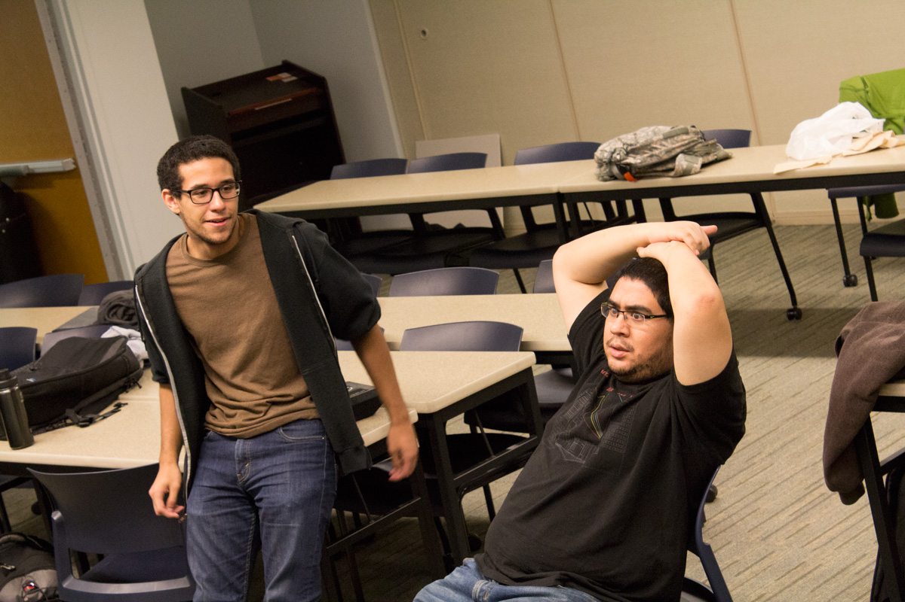
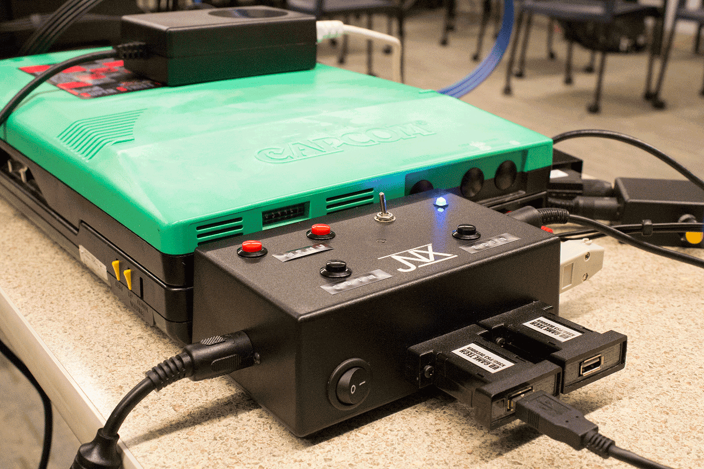

ST Blowup
Two guys chilling when something awesome happended in Super Street Fighter 2 Turbo

Arcade Hardware
Look at this magnificent hardware running a ST arcade board

GGs
Even though there was a handshake mix-up both players respectfully say GGs